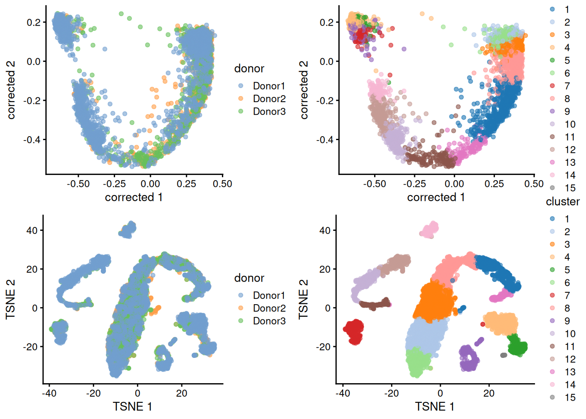

R
library(SingleCellExperiment)
## Loading required package: SummarizedExperiment
## Loading required package: MatrixGenerics
## Loading required package: matrixStats
##
## Attaching package: 'MatrixGenerics'
## The following objects are masked from 'package:matrixStats':
##
## colAlls, colAnyNAs, colAnys, colAvgsPerRowSet, colCollapse,
## colCounts, colCummaxs, colCummins, colCumprods, colCumsums,
## colDiffs, colIQRDiffs, colIQRs, colLogSumExps, colMadDiffs,
## colMads, colMaxs, colMeans2, colMedians, colMins, colOrderStats,
## colProds, colQuantiles, colRanges, colRanks, colSdDiffs, colSds,
## colSums2, colTabulates, colVarDiffs, colVars, colWeightedMads,
## colWeightedMeans, colWeightedMedians, colWeightedSds,
## colWeightedVars, rowAlls, rowAnyNAs, rowAnys, rowAvgsPerColSet,
## rowCollapse, rowCounts, rowCummaxs, rowCummins, rowCumprods,
## rowCumsums, rowDiffs, rowIQRDiffs, rowIQRs, rowLogSumExps,
## rowMadDiffs, rowMads, rowMaxs, rowMeans2, rowMedians, rowMins,
## rowOrderStats, rowProds, rowQuantiles, rowRanges, rowRanks,
## rowSdDiffs, rowSds, rowSums2, rowTabulates, rowVarDiffs,
## rowVars, rowWeightedMads, rowWeightedMeans, rowWeightedMedians,
## rowWeightedSds, rowWeightedVars
## Loading required package: GenomicRanges
## Loading required package: stats4
## Loading required package: BiocGenerics
## Loading required package: generics
##
## Attaching package: 'generics'
## The following objects are masked from 'package:base':
##
## as.difftime, as.factor, as.ordered, intersect, is.element,
## setdiff, setequal, union
##
## Attaching package: 'BiocGenerics'
## The following objects are masked from 'package:stats':
##
## IQR, mad, sd, var, xtabs
## The following object is masked from 'package:utils':
##
## data
## The following objects are masked from 'package:base':
##
## Filter, Find, Map, Position, Reduce, anyDuplicated, aperm,
## append, as.data.frame, basename, cbind, colnames, dirname,
## do.call, duplicated, eval, evalq, get, grep, grepl, is.unsorted,
## lapply, mapply, match, mget, order, paste, pmax, pmax.int, pmin,
## pmin.int, rank, rbind, rownames, sapply, saveRDS, scale,
## sequence, table, tapply, transform, unique, unsplit, which.max,
## which.min
## Loading required package: S4Vectors
##
## Attaching package: 'S4Vectors'
## The following object is masked from 'package:utils':
##
## findMatches
## The following objects are masked from 'package:base':
##
## I, expand.grid, unname
## Loading required package: IRanges
## Loading required package: Seqinfo
## Loading required package: Biobase
## Welcome to Bioconductor
##
## Vignettes contain introductory material; view with
## 'browseVignettes()'. To cite Bioconductor, see
## 'citation("Biobase")', and for packages 'citation("pkgname")'.
##
## Attaching package: 'Biobase'
## The following object is masked from 'package:MatrixGenerics':
##
## rowMedians
## The following objects are masked from 'package:matrixStats':
##
## anyMissing, rowMedians
library(tidyverse)
## ── Attaching core tidyverse packages ───────────────────── tidyverse 2.0.0 ──
## ✔ dplyr 1.2.1 ✔ readr 2.2.0
## ✔ forcats 1.0.1 ✔ stringr 1.6.0
## ✔ ggplot2 4.0.3 ✔ tibble 3.3.1
## ✔ lubridate 1.9.5 ✔ tidyr 1.3.2
## ✔ purrr 1.2.2
## ── Conflicts ─────────────────────────────────────── tidyverse_conflicts() ──
## ✖ lubridate::%within%() masks IRanges::%within%()
## ✖ ggplot2::Position() masks BiocGenerics::Position(), base::Position()
## ✖ dplyr::collapse() masks IRanges::collapse()
## ✖ dplyr::combine() masks Biobase::combine(), BiocGenerics::combine()
## ✖ dplyr::count() masks matrixStats::count()
## ✖ dplyr::desc() masks IRanges::desc()
## ✖ tidyr::expand() masks S4Vectors::expand()
## ✖ dplyr::filter() masks stats::filter()
## ✖ dplyr::first() masks S4Vectors::first()
## ✖ dplyr::lag() masks stats::lag()
## ✖ purrr::reduce() masks GenomicRanges::reduce(), IRanges::reduce()
## ✖ dplyr::rename() masks S4Vectors::rename()
## ✖ lubridate::second() masks S4Vectors::second()
## ✖ lubridate::second<-() masks S4Vectors::second<-()
## ✖ dplyr::slice() masks IRanges::slice()
## ℹ Use the conflicted package (<http://conflicted.r-lib.org/>) to force all conflicts to become errors
# Download raw file
library(BiocFileCache)
## Loading required package: dbplyr
##
## Attaching package: 'dbplyr'
##
## The following objects are masked from 'package:dplyr':
##
## ident, sql, sql_escape_ident, sql_escape_string
##
## OpenTelemetry error: there is no package called 'otelsdk'
## OpenTelemetry error: there is no package called 'otelsdk'
bfc <- BiocFileCache(ask = FALSE)
umi_file <- bfcrpath(bfc, 'https://ftp.ncbi.nlm.nih.gov/geo/series/GSE112nnn/GSE112013/suppl/GSE112013_Combined_UMI_table.txt.gz')
## adding rname 'https://ftp.ncbi.nlm.nih.gov/geo/series/GSE112nnn/GSE112013/suppl/GSE112013_Combined_UMI_table.txt.gz'
# Create SingleCellExperiment object
x <- data.table::fread(umi_file, data.table = FALSE)
counts <- as(as.matrix(x[, -1]), 'dgCMatrix')
rownames(counts) <- x[, 1]
rm(x); invisible(gc())
testis <- SingleCellExperiment(
assays = list(counts = counts),
colData = DataFrame(cellid = colnames(counts))
)
testis$Barcode <- str_replace(testis$cellid, 'Donor.-', '') |> str_replace('-.', '')
testis$donor <- str_replace(testis$cellid, '-.*', '')
testis$replicate <- str_replace(testis$cellid, '.*-', '')
testis$sample <- paste0(testis$donor, '_rep', testis$replicate)
table(testis$donor, testis$replicate)
##
## 1 2
## Donor1 1000 1248
## Donor2 985 1009
## Donor3 1116 1132
# Remove doublets
set.seed(1000)
testis <- scDblFinder::scDblFinder(testis, samples = testis$sample)
##
|
| | 0%
|
|=========== | 17%
|
|====================== | 33%
|
|================================== | 50%
|
|============================================= | 67%
|
|======================================================== | 83%
|
|===================================================================| 100%
table(testis$scDblFinder.class)
##
## singlet doublet
## 6224 266
testis <- testis[, testis$scDblFinder.class == 'singlet']
# Recover Ensembl IDs and biotypes for genes, and keep protein-coding genes
gene_info <- AnnotationDbi::select(
org.Hs.eg.db::org.Hs.eg.db,
keys = rownames(testis), keytype = 'SYMBOL',
columns = c('ENSEMBL', 'GENETYPE')
) |>
filter(GENETYPE == 'protein-coding') |>
distinct(SYMBOL, .keep_all = TRUE)
##
## 'select()' returned 1:many mapping between keys and columns
testis <- testis[gene_info$SYMBOL, ]
rowData(testis)$gene_name <- gene_info$SYMBOL
rowData(testis)$gene_id <- gene_info$ENSEMBL
# Get QCs per cell, flag low-quality cells and filter them out
mito <- grep('^MT-', rownames(testis), value = TRUE)
testis <- scrapper::quickRnaQc.se(testis, subsets = list(mito = mito), block = testis$sample)
table(testis$keep)
##
## FALSE TRUE
## 832 5392
testis <- testis[, testis$keep]
# Filter out genes not expressed in at least 10 cells
testis <- testis[Matrix::rowSums(counts(testis) > 0) >= 10, ]
# Normalize counts
clusters <- scran::quickCluster(testis, block = testis$sample)
testis <- scran::computeSumFactors(testis, clusters = clusters)
testis <- scrapper::normalizeRnaCounts.se(
testis, size.factors = sizeFactors(testis), block = testis$sample,
more.norm.args = list(delayed = FALSE)
)
# Computing biological variance of each gene
testis <- scrapper::chooseRnaHvgs.se(testis, block = testis$donor, top = 2000)
rowData(testis)$isHVG <- rowData(testis)$hvg
HVGs <- rownames(testis)[rowData(testis)$isHVG]
# Embedding dataset in PCA space, correcting for batch effect
mergedBatches <- batchelor::fastMNN(
testis,
batch = testis$donor,
subset.row = HVGs
)
reducedDim(testis, 'corrected') <- reducedDim(mergedBatches, 'corrected')
# Cluster cells using shared nearest-neighbors graph and Louvain community finding algorithm
testis <- scrapper::clusterGraph.se(testis, reddim.type = 'corrected', output.name = 'cluster')
testis$cluster <- factor(testis$cluster)
table(testis$cluster)
##
## 1 2 3 4 5 6 7 8 9 10 11 12 13 14 15
## 519 754 806 471 241 347 288 534 302 335 176 304 128 168 19
# Embedding dataset in TSNE space for visualization
set.seed(10)
testis <- scater::runTSNE(testis, dimred = 'corrected')
# Visualize embeddings
p <- cowplot::plot_grid(
scater::plotReducedDim(testis, 'corrected', colour_by = 'donor'),
scater::plotReducedDim(testis, 'corrected', colour_by = 'cluster'),
scater::plotReducedDim(testis, 'TSNE', colour_by = 'donor'),
scater::plotReducedDim(testis, 'TSNE', colour_by = 'cluster')
)
p